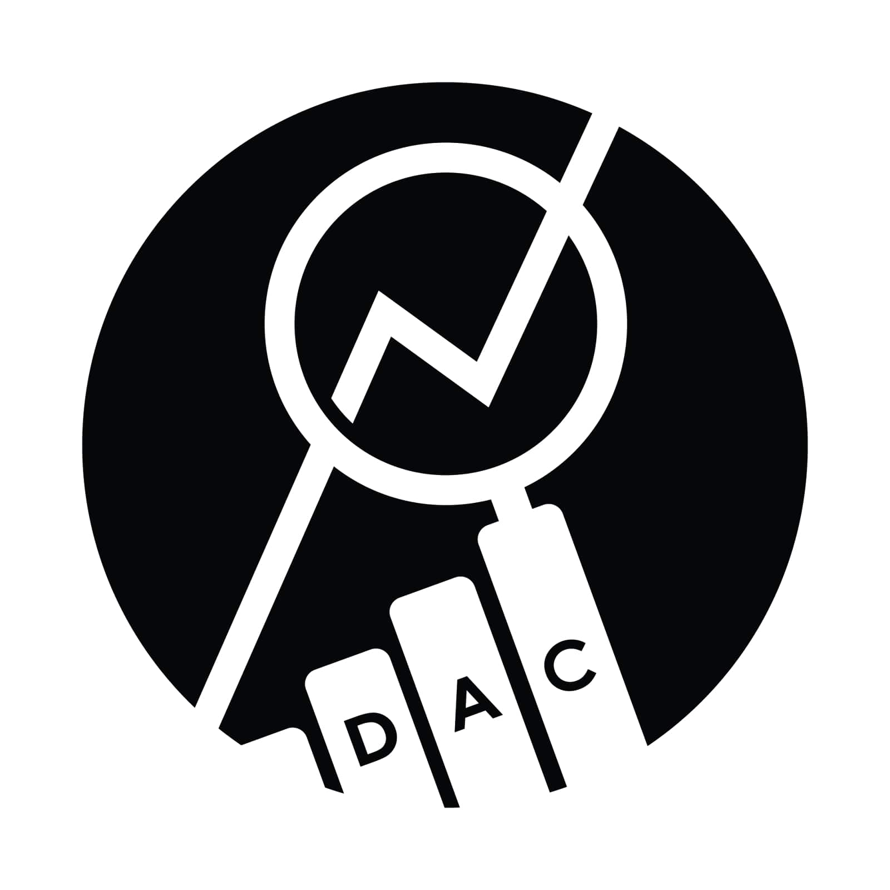
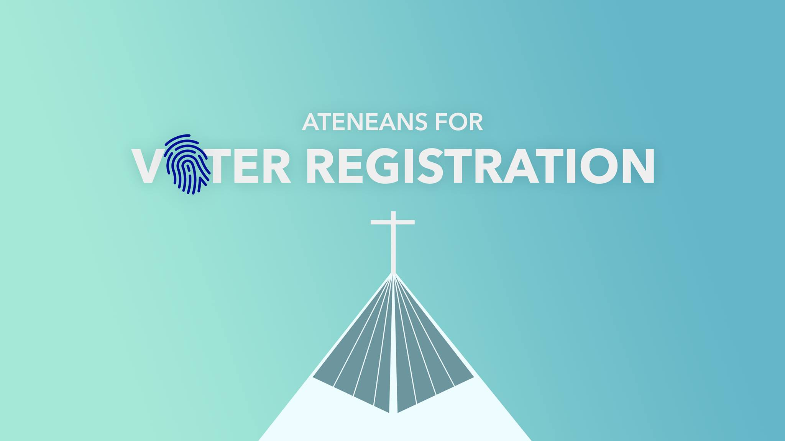
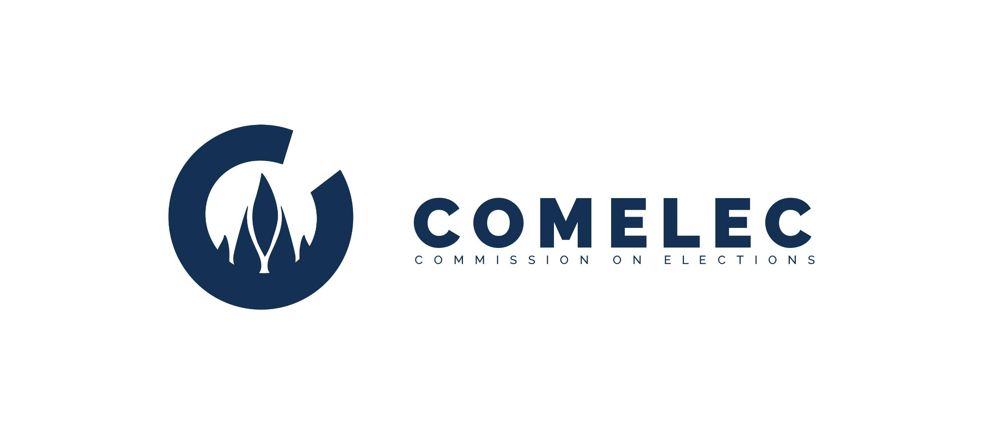
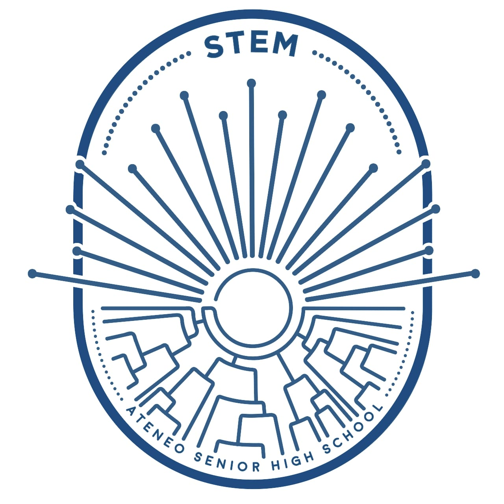

My Leadership Experience in a Nutshell.

ASHS Data Analytics Committee
Mentor (June 2021 - Present)
Founder and Overall Head (September 2020 - May 2021)
The ASHS Data Analytics Committee aims to institutionalize a culture of research and data analytics in the ASHS and its student council.
- Founded the Data Analytics Committee to address the lack of data analytics integration in the student council’s decision-making process
- Collaborated with student leaders from the ASHS and Loyola Schools for the creation of the proposal
- Led the pilot-testing of the committee which included the evaluation of a major schoolwide event and the analysis survey data on student and teacher feedback on student council officers

ADMU Office of the Vice President for Social Development - Student Arm
Co-head for Institutional Networks, Ateneans for Voters’ Registration Initiative
May 2021 - Present
The Ateneans for Voter Registration network is a group of students and alumni under the Office of the VP for Social Development that aims to encourage and assist as many Filipinos as possible to register to vote by September 30, 2021.
- Utilized the data gathered from a political participation survey conducted in the conceptualization of voters’ registration initiatives
- Currently leading the collaboration of the OVPSD Student Arm with basic and higher education institutions, student councils and sectors, and other Jesuit institutions for joint voters’ registration initiatives

ASHS Commission on Elections
Chairperson
May 2020 - June 2021
The ASHS COMELEC is an independent body that empowers the will of the students through the facilitation of fair, orderly, and just democratic processes.
- Led and motivated a team of 46 Commissioners to organize two (2) school-wide elections and three (3) local elections for the officers of each class, organization, and committee in the ASHS
- Initiated the streamlining of all internal procedures to fit the needs of an online school year
- Established partnerships with four (4) ASHS organizations for assistance with organizing the online elections
- Benchmarked with two (2) SHS COMELECs outside the ASHS for the mutual improvement of electoral and internal processes

ASHS STEM Strand Council
Vice Chairperson
August 2019 - March 2020
The Science Technology Engineering and Mathematics (STEM) Strand Council is composed of the class officers of the STEM strand and serves to conduct projects for the benefit of the STEM strand and the country.
- Led the charity projects of the STEM Strand together with the Chairperson and 16 class presidents
- Conducted regular meetings with Class Presidents to discuss issues within each class and possible solutions
- Guided class officers in the execution of their class initiatives